Time and Uncertainty
We have developed our techniques for probabilistic reasoning in the context of static worlds,
in which each random variable has a single fixed value. For example, when repairing a car,
we assume that whatever is broken remains broken during the process of diagnosis; our job
is to infer the state of the car from observed evidence, which also remains fixed.Now consider a slightly different problem: treating a diabetic patient. As in the case of
car repair, we have evidence such as recent insulin doses, food intake, blood sugar measure-
ments, and other physical signs. The task is to assess the current state of the patient, including
the actual blood sugar level and insulin level. Given this information, we can make a deci-
sion about the patient’s food intake and insulin dose. Unlike the case of car repair, here the480 Chapter 14 Probabilistic Reasoning over Time
dynamic aspects of the problem are essential. Blood sugar levels and measurements thereof
can change rapidly over time, depending on recent food intake and insulin doses, metabolic
activity, the time of day, and so on. To assess the current state from the history of evidence
and to predict the outcomes of treatment actions, we must model these changes.The same considerations arise in many other contexts, such as tracking the location of a
robot, tracking the economic activity of a nation, and making sense of a spoken or written
sequence of words. How can dynamic situations like these be modeled?Discrete time
Time sliceStates and observations
This chapter discusses discrete-time models, in which the world is viewed as a series of
snapshots or time slices.1 We’ll just number the time slices 0, 1, 2, and so on, rather than
assigning specific times to them. Typically, the time interval ∆ between slices is assumed tobe the same for every interval. For any particular application, a specific value of ∆ has to be
chosen. Sometimes this is dictated by the sensor; for example, a video camera might supply
images at intervals of 1/30 of a second. In other cases, the interval is dictated by the typical
rates of change of the relevant variables; for example, in the case of blood glucose monitoring,
things can change significantly in the course of ten minutes, so a one-minute interval might
be appropriate. On the other hand, in modeling continental drift over geological time, an
interval of a million years might be fine.Each time slice in a discrete-time probability model contains a set of random variables,
some observable and some not. For simplicity, we will assume that the same subset of vari-
ables is observable in each time slice (although this is not strictly necessary in anything that
follows). We will use Xt to denote the set of state variables at time t, which are assumed to
be unobservable, and Et to denote the set of observable evidence variables. The observation
at time t is Et = et for some set of values et.Consider the following example: You are the security guard stationed at a secret under-
ground installation. You want to know whether it’s raining today, but your only access to the
outside world occurs each morning when you see the director coming in with, or without,
an umbrella. For each day t, the set Et thus contains a single evidence variable Umbrellat
or Ut for short (whether the umbrella appears), and the set Xt contains a single state vari-
able Raint or Rt for short (whether it is raining). Other problems can involve larger sets of
variables. In the diabetes example, the evidence variables might be MeasuredBloodSugart
and PulseRatet while the state variables might include BloodSugart and StomachContentst.
(Notice that BloodSugart and MeasuredBloodSugart are not the same variable; this is how
we deal with noisy measurements of actual quantities.)We will assume that the state sequence starts at t = 0 and evidence starts arriving at t = 1.
Hence, our umbrella world is represented by state variables R0, R1, R2, . . . and evidence vari-
ables U1, U2, We will use the notation a:b to denote the sequence of integers from a tob inclusive and the notation Xa:b to denote the set of variables from Xa to Xb inclusive. For
example, U1:3 corresponds to U1, U2, U3. (Note that this is different from the notation used in
programming languages such as Python and Go, where U[1:3] would not include U[3].)1 Uncertainty over continuous time can be modeled by stochastic differential equations (SDEs). The models
studied in this chapter can be viewed as discrete-time approximations to SDEs.Section 14.1 Time and Uncertainty 481
Xt–2
Xt–1
Xt
Xt+1
Xt+2
Xt–2
Xt–1
Xt
Xt+1
Xt+2
(a)
(b)
Figure 14.1 (a) Bayesian network structure corresponding to a first-order Markov process
with state defined by the variables Xt. (b) A second-order Markov process.Transition and sensor models
With the set of state and evidence variables for a given problem decided on, the next step is
to specify how the world evolves (the transition model) and how the evidence variables get
their values (the sensor model).The transition model specifies the probability distribution over the latest state variables,
given the previous values, that is, P(Xt | X0:t−1). Now we face a problem: the set X0:t−1 isunbounded in size as t increases. We solve the problem by making a Markov assumption— Markov assumption
that the current state depends on only a finite fixed number of previous states. Processes
satisfying this assumption were first studied in depth by the statistician Andrei Markov (1856–1922) and are called Markov processes or Markov chains. They come in various flavors; Markov process
process
the simplest is the first-order Markov process, in which the current state depends only on First-order Markov
the previous state and not on any earlier states. In other words, a state provides enough
information to make the future conditionally independent of the past, and we haveP(Xt | X0:t−1) = P(Xt | Xt−1) . (14.1)
Hence, in a first-order Markov process, the transition model is the conditional distribution
P(Xt | Xt−1). The transition model for a second-order Markov process is the conditional dis-
tribution P(Xt | Xt−2, Xt−1). Figure 14.1 shows the Bayesian network structures correspond-
ing to first-order and second-order Markov processes.Even with the Markov assumption there is still a problem: there are infinitely many pos-
sible values of t. Do we need to specify a different distribution for each time step? We avoidthis problem by assuming that changes in the world state are caused by a time-homogeneous Time-homogeneous
process—that is, a process of change that is governed by laws that do not themselves change
over time. In the umbrella world, then, the conditional probability of rain, P(Rt |Rt−1), is the
same for all t, and we need specify only one conditional probability table.Now for the sensor model. The evidence variables Et could depend on previous vari-
ables as well as the current state variables, but any state that’s worth its salt should suffice toassumption
generate the current sensor values. Thus, we make a sensor Markov assumption as follows: Sensor Markov
P(Et | X0:t, E1:t−1) = P(Et | Xt) . (14.2)
Thus, P(Et | Xt) is our sensor model (sometimes called the observation model). Figure 14.2
shows both the transition model and the sensor model for the umbrella example. Notice the
direction of the dependence between state and sensors: the arrows go from the actual state
of the world to sensor values because the state of the world causes the sensors to take on
particular values: the rain causes the umbrella to appear. (The inference process, of course,482 Chapter 14 Probabilistic Reasoning over Time
P(Rt|Rt-1)
0.7
0.3
P(Ut|Rt)
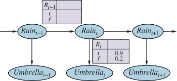
Figure 14.2 Bayesian network structure and conditional distributions describing the um-
brella world. The transition model is P(Raint |Raint−1) and the sensor model is
P(Umbrellat |Raint).goes in the other direction; the distinction between the direction of modeled dependencies
and the direction of inference is one of the principal advantages of Bayesian networks.)In addition to specifying the transition and sensor models, we need to say how everything
gets started—the prior probability distribution at time 0, P(X0). With that, we have a specifi-
cation of the complete joint distribution over all the variables, using Equation (13.2). For any
time step t,t
P(X0:t, E1:t) = P(X0) ∏ P(Xi | Xi−1) P(Ei | Xi) . (14.3)
i = 1
The three terms on the right-hand side are the initial state model P(X0), the transition model
P(Xi | Xi−1), and the sensor model P(Ei | Xi). This equation defines the semantics of the
family of temporal models represented by the three terms. Notice that standard Bayesian net-
works cannot represent such models because they require a finite set of variables. The ability
to handle an infinite set of variables comes from two things: first, defining the infinite set us-
ing integer indices; and second, the use of implicit universal quantification (see Section 8.2)
to define the sensor and transition models for every time step.The structure in Figure 14.2 is a first-order Markov process—the probability of rain is
assumed to depend only on whether it rained the previous day. Whether such an assumption
is reasonable depends on the domain itself. The first-order Markov assumption says that the
state variables contain all the information needed to characterize the probability distribution
for the next time slice. Sometimes the assumption is exactly true—for example, if a particle
is executing a random walk along the x-axis, changing its position by ±1 at each time step,
then using the x-coordinate as the state gives a first-order Markov process. Sometimes the
assumption is only approximate, as in the case of predicting rain only on the basis of whether
it rained the previous day. There are two ways to improve the accuracy of the approximation:Increasing the order of the Markov process model. For example, we could make a
second-order model by adding Raint−2 as a parent of Raint, which might give slightly
more accurate predictions. For example, in Palo Alto, California, it very rarely rains
more than two days in a row.Section 14.2 Inference in Temporal Models 483
Increasing the set of state variables. For example, we could add Seasont to allow
us to incorporate historical records of rainy seasons, or we could add Temperaturet,
Humidityt, and Pressuret (perhaps at a range of locations) to allow us to use a physical
model of rainy conditions.
Exercise 14.AUGM asks you to show that the first solution—increasing the order—can always
be reformulated as an increase in the set of state variables, keeping the order fixed. Notice
that adding state variables might improve the system’s predictive power but also increases
the prediction requirements: we now have to predict the new variables as well. Thus, we are
looking for a “self-sufficient” set of variables, which really means that we have to understand
the “physics” of the process being modeled. The requirement for accurate modeling of the
process is obviously lessened if we can add new sensors (e.g., measurements of temperature
and pressure) that provide information directly about the new state variables.Consider, for example, the problem of tracking a robot wandering randomly on the X–Y
plane. One might propose that the position and velocity are a sufficient set of state variables:
one can simply use Newton’s laws to calculate the new position, and the velocity may change
unpredictably. If the robot is battery-powered, however, then battery exhaustion would tend
to have a systematic effect on the change in velocity. Because this in turn depends on how
much power was used by all previous maneuvers, the Markov property is violated.We can restore the Markov property by including the charge level Batteryt as one of the
state variables that make up Xt. This helps in predicting the motion of the robot, but in turn
requires a model for predicting Batteryt from Batteryt−1 and the velocity. In some cases, that
can be done reliably, but more often we find that error accumulates over time. In that case,
accuracy can be improved by adding a new sensor for the battery level. We will return to the
battery example in Section 14.5.
Inference in Temporal Models
Having set up the structure of a generic temporal model, we can formulate the basic inference
tasks that must be solved:Filtering2 or state estimation is the task of computing the belief state P(Xt | e1:t)— Filtering
the posterior distribution over the most recent state given all evidence to date. In the
umbrella example, this would mean computing the probability of rain today, given all
the umbrella observations made so far. Filtering is what a rational agent does to keep
track of the current state so that rational decisions can be made. It turns out that an
almost identical calculation provides the likelihood of the evidence sequence, P(e1:t).State estimation
Belief statePrediction: This is the task of computing the posterior distribution over the future state, Prediction
given all evidence to date. That is, we wish to compute P(Xt+k | e1:t) for some k > 0.
In the umbrella example, this might mean computing the probability of rain three days
from now, given all the observations to date. Prediction is useful for evaluating possible
courses of action based on their expected outcomes.Smoothing: This is the task of computing the posterior distribution over a past state, Smoothing
given all evidence up to the present. That is, we wish to compute P(Xk | e1:t) for some k
2 The term “filtering” refers to the roots of this problem in early work on signal processing, where the problem
is to filter out the noise in a signal by estimating its underlying properties.484 Chapter 14 Probabilistic Reasoning over Time
such that 0 ≤ k < t. In the umbrella example, it might mean computing the probability
that it rained last Wednesday, given all the observations of the umbrella carrier made up
to today. Smoothing provides a better estimate of the state at time k than was available
at that time, because it incorporates more evidence.3Most likely explanation: Given a sequence of observations, we might wish to find the
sequence of states that is most likely to have generated those observations. That is, we
wish to compute argmaxx1:t P(x1:t | e1:t). For example, if the umbrella appears on each
of the first three days and is absent on the fourth, then the most likely explanation is that
it rained on the first three days and did not rain on the fourth. Algorithms for this task
are useful in many applications, including speech recognition—where the aim is to find
the most likely sequence of words, given a series of sounds—and the reconstruction of
bit strings transmitted over a noisy channel.In addition to these inference tasks, we also have
Learning: The transition and sensor models, if not yet known, can be learned from
observations. Just as with static Bayesian networks, dynamic Bayes net learning can be
done as a by-product of inference. Inference provides an estimate of what transitions
actually occurred and of what states generated the sensor readings, and these estimates
can be used to learn the models. The learning process can operate via an iterative up-
date algorithm called expectation–maximization or EM, or it can result from Bayesian
updating of the model parameters given the evidence. See Chapter 21 for more details.
The remainder of this section describes generic algorithms for the four inference tasks, inde-
pendent of the particular kind of model employed. Improvements specific to each model are
described in subsequent sections.Filtering and prediction
As we pointed out in Section 7.7.3, a useful filtering algorithm needs to maintain a current
state estimate and update it, rather than going back over the entire history of percepts for each
update. (Otherwise, the cost of each update increases as time goes by.) In other words, given
the result of filtering up to time t, the agent needs to compute the result for t + 1 from the new
evidence et+1. So we haveP(Xt+1 | e1:t+1) = f (et+1, P(Xt | e1:t))
for some function f . This process is called recursive estimation. (See also Sections 4.4
and 7.7.3.) We can view the calculation as being composed of two parts: first, the current
state distribution is projected forward from t to t + 1; then it is updated using the new evidence
et+1. This two-part process emerges quite simply when the formula is rearranged:P(Xt+1 | e1:t+1) = P(Xt+1 | e1:t, et+1) (dividing up the evidence)
= α P(et+1 | Xt+1, e1:t) P(Xt+1 | e1:t) (using Bayes’ rule, given e1:t)
= α P(et+1 | Xt+1) P(Xt+1 | e1:t) (by the sensor Markov assumption). (14.4)
` up˛d¸ate x ` pred˛i¸ction x
Here and throughout this chapter, α is a normalizing constant used to make probabilities sum
up to 1. Now we plug in an expression for the one-step prediction P(Xt+1 | e1:t), obtained by3 In particular, when tracking a moving object with inaccurate position observations, smoothing gives a smoother
estimated trajectory than filtering—hence the name.Section 14.2 Inference in Temporal Models 485
conditioning on the current state Xt. The resulting equation for the new state estimate is the
central result in this chapter:P(Xt+1 | e1:t+1) = α P(et+1 | Xt+1) ∑P(Xt+1 | xt, e1:t)P(xt | e1:t)
xt
` ˛¸ x ` ˛¸ x ` ˛¸ x
= α P(et+1 | Xt+1) ∑ P(Xt+1 | xt) P(xt | e1:t) (Markov assumption). (14.5)
sensor model xt transition model recursion
In this expression, all the terms come either from the model or from the previous state esti-
mate. Hence, we have the desired recursive formulation. We can think of the filtered estimate
P(Xt | e1:t) as a “message” f1:t that is propagated forward along the sequence, modified by
each transition and updated by each new observation. The process is given byf1:t+1 = FORWARD(f1:t, et+1) ,
where FORWARD implements the update described in Equation (14.5) and the process begins
with f1:0 = P(X0). When all the state variables are discrete, the time for each update is
constant (i.e., independent of t), and the space required is also constant. (The constants
depend, of course, on the size of the state space and the specific type of the temporal modelin question.) The time and space requirements for updating must be constant if a finite agent K
is to keep track of the current state distribution indefinitely.
Let us illustrate the filtering process for two steps in the basic umbrella example (Fig-
ure 14.2). That is, we will compute P(R2 |u1:2) as follows:On day 0, we have no observations, only the security guard’s prior beliefs; let’s assume
that consists of P(R0) = ⟨0.5, 0.5⟩.On day 1, the umbrella appears, so U1 = true. The prediction from t = 0 to t = 1 is
P(R1) = ∑P(R1 | r0)P(r0)
r0
= ⟨0.7, 0.3⟩ × 0.5 + ⟨0.3, 0.7⟩ × 0.5 = ⟨0.5, 0.5⟩.
Then the update step simply multiplies by the probability of the evidence for t = 1 and
normalizes, as shown in Equation (14.4):P(R1 |u1) = α P(u1 |R1)P(R1) = α⟨0.9, 0.2⟩⟨0.5, 0.5⟩
= α⟨0.45, 0.1⟩ ≈ ⟨0.818, 0.182⟩.
On day 2, the umbrella appears, so U2 = true. The prediction from t = 1 to t = 2 is
P(R2 |u1) = ∑P(R2 | r1)P(r1 |u1)
r1
= ⟨0.7, 0.3⟩ × 0.818 + ⟨0.3, 0.7⟩ × 0.182 ≈ ⟨0.627, 0.373⟩,
and updating it with the evidence for t = 2 gives
P(R2 |u1, u2) = α P(u2 |R2)P(R2 |u1) = α⟨0.9, 0.2⟩⟨0.627, 0.373⟩
= α⟨0.565, 0.075⟩ ≈ ⟨0.883, 0.117⟩.
Intuitively, the probability of rain increases from day 1 to day 2 because rain persists. Exer-
cise 14.CONV(a) asks you to investigate this tendency further.The task of prediction can be seen simply as filtering without the addition of new evi-
dence. In fact, the filtering process already incorporates a one-step prediction, and it is easy486 Chapter 14 Probabilistic Reasoning over Time
Mixing time
to derive the following recursive computation for predicting the state at t + k + 1 from a pre-
diction for t + k:` ˛¸ x ` ˛¸ x
P(Xt+k+1 | e1:t) = ∑ P(Xt+k+1 | xt+k) P(xt+k | e1:t) . (14.6)
xt+k transition model recursion
Naturally, this computation involves only the transition model and not the sensor model.
It is interesting to consider what happens as we try to predict further and further into
the future. As Exercise 14.CONV(b) shows, the predicted distribution for rain converges to
a fixed point ⟨0.5, 0.5⟩, after which it remains constant for all time.4 This is the stationaryof the Markov process defined by the transition model. (See also page 462.) A
great deal is known about the properties of such distributions and about the mixing time—
roughly, the time taken to reach the fixed point. In practical terms, this dooms to failure any
attempt to predict the actual state for a number of steps that is more than a small fraction of
the mixing time, unless the stationary distribution itself is strongly peaked in a small area of
the state space. The more uncertainty there is in the transition model, the shorter will be the
mixing time and the more the future is obscured.In addition to filtering and prediction, we can use a forward recursion to compute the
likelihood of the evidence sequence, P(e1:t). This is a useful quantity if we want to compare
different temporal models that might have produced the same evidence sequence (e.g., two
different models for the persistence of rain). For this recursion, we use a likelihood message
l1:t(Xt) = P(Xt, e1:t). It is easy to show (Exercise 14.LIKL) that the message calculation is
identical to that for filtering:l1:t+1 = FORWARD(l1:t, et+1) .
Having computed l1:t, we obtain the actual likelihood by summing out Xt:
L1:t = P(e1:t) = ∑l1:t(xt) . (14.7)
xt
Notice that the likelihood message represents the probabilities of longer and longer evidence
sequences as time goes by and so becomes numerically smaller and smaller, leading to under-
flow problems with floating-point arithmetic. This is an important problem in practice, but
we shall not go into solutions here.Smoothing
As we said earlier, smoothing is the process of computing the distribution over past states
given evidence up to the present—that is, P(Xk | e1:t) for 0 ≤ k < t. (See Figure 14.3.) In
anticipation of another recursive message-passing approach, we can split the computation
into two parts—the evidence up to k and the evidence from k + 1 to t,P(Xk | e1:t) = P(Xk | e1:k, ek+1:t)
= α P(Xk | e1:k)P(ek+1:t | Xk, e1:k) (using Bayes’ rule, given e1:k)
= α P(Xk | e1:k)P(ek+1:t | Xk) (using conditional independence)
= α f1:k × bk+1:t . (14.8)
where “×” represents pointwise multiplication of vectors. Here we have defined a “back-
4 If one picks an arbitrary day to be t = 0, then it makes sense to choose the prior P(Rain0) to match the stationary
distribution, which is why we picked ⟨0.5, 0.5⟩ as the prior. Had we picked a different prior, the stationary
distribution would still have worked out to ⟨0.5, 0.5⟩.Section 14.2 Inference in Temporal Models 487
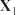
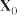
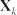
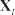
Figure 14.3 Smoothing computes P(Xk | e1:t), the posterior distribution of the state at some
past time k given a complete sequence of observations from 1 to t.ward” message bk+1:t = P(ek+1:t | Xk), analogous to the forward message f1:k. The forward
message f1:k can be computed by filtering forward from 1 to k, as given by Equation (14.5). It
turns out that the backward message bk+1:t can be computed by a recursive process that runs
backward from t:P(ek+1:t | Xk) = ∑ P(ek+1:t | Xk, xk+1)P(xk+1 | Xk) (conditioning on Xk+1)
xk+1
= ∑ P(ek+1:t | xk+1)P(xk+1 | Xk) (by conditional independence)
xk+1
= ∑ P(ek+1, ek+2:t | xk+1)P(xk+1 | Xk)
xk+1
= ∑ P(ek+1 | xk+1) P(ek+2:t | xk+1) P(xk+1 | Xk) , (14.9)
xk+1 `senso˛r ¸model x` recu˛r¸sion x tr`ansiti˛o¸n modxel
where the last step follows by the conditional independence of ek+1 and ek+2:t, given xk+1.
In this expression, all the terms come either from the model or from the previous backward
message. Hence, we have the desired recursive formulation. In message form, we havebk+1:t = BACKWARD(bk+2:t, ek+1) ,
where BACKWARD implements the update described in Equation (14.9). As with the forward
recursion, the time and space needed for each update are constant and thus independent of t.
We can now see that the two terms in Equation (14.8) can both be computed by recursions
through time, one running forward from 1 to k and using the filtering equation (14.5) and theother running backward from t to k + 1 and using Equation (14.9).
For the initialization of the backward phase, we have bt+1:t = P(et+1:t | Xt) = P( | Xt) = 1,
where 1 is a vector of 1s. The reason for this is that et+1:t is an empty sequence, so the
probability of observing it is 1.Let us now apply this algorithm to the umbrella example, computing the smoothed esti-
mate for the probability of rain at time k = 1, given the umbrella observations on days 1 and2. From Equation (14.8), this is given by
P(R1 |u1, u2) = α P(R1 |u1) P(u2 |R1) . (14.10)
The first term we already know to be ⟨.818,.182⟩, from the forward filtering process de-
scribed earlier. The second term can be computed by applying the backward recursion in
Equation (14.9):P(u2 |R1) = ∑P(u2 | r2)P( | r2)P(r2 |R1)
r2
= (0.9 × 1 ×⟨0.7, 0.3⟩) + (0.2 × 1 ×⟨0.3, 0.7⟩) = ⟨0.69, 0.41⟩.
488 Chapter 14 Probabilistic Reasoning over Time
function FORWARD-BACKWARD(ev, prior) returns a vector of probability distributions
inputs: ev, a vector of evidence values for steps 1, . . . , t, the prior distribution on the initial state, P(X0)
local variables: fv, a vector of forward messages for steps 0, . . . , t
b, a representation of the backward message, initially all 1s
sv, a vector of smoothed estimates for steps 1, . . . , t
fv[0] ←prior
for i = 1 to t do
fv[i] ← Forward(fv[i− 1], ev[i])for i = t down to 1 do
sv[i] ← Normalize(fv[i] × b)
b ← Backward(b, ev[i])return sv
Figure 14.4 The forward–backward algorithm for smoothing: computing posterior prob-
abilities of a sequence of states given a sequence of observations. The FORWARD and
BACKWARD operators are defined by Equations (14.5) and (14.9), respectively.Forward–backward
algorithmPlugging this into Equation (14.10), we find that the smoothed estimate for rain on day 1 is
P(R1 |u1, u2) = α⟨0.818, 0.182⟩ ×⟨0.69, 0.41⟩ ≈ ⟨0.883, 0.117⟩.
Thus, the smoothed estimate for rain on day 1 is higher than the filtered estimate (0.818) in
this case. This is because the umbrella on day 2 makes it more likely to have rained on day
2; in turn, because rain tends to persist, that makes it more likely to have rained on day 1.Both the forward and backward recursions take a constant amount of time per step; hence,
the time complexity of smoothing with respect to evidence e1:t is O(t). This is the complexity
for smoothing at a particular time step k. If we want to smooth the whole sequence, one
obvious method is simply to run the whole smoothing process once for each time step to be
smoothed. This results in a time complexity of O(t2).A better approach uses a simple application of dynamic programming to reduce the com-
plexity to O(t). A clue appears in the preceding analysis of the umbrella example, where we
were able to reuse the results of the forward-filtering phase. The key to the linear-time algo-
rithm is to record the results of forward filtering over the whole sequence. Then we run the
backward recursion from t down to 1, computing the smoothed estimate at each step k from
the computed backward message bk+1:t and the stored forward message f1:k. The algorithm,
aptly called the forward–backward algorithm, is shown in Figure 14.4.The alert reader will have spotted that the Bayesian network structure shown in Fig-
ure 14.3 is a polytree as defined on page 451. This means that a straightforward application
of the clustering algorithm also yields a linear-time algorithm that computes smoothed es-
timates for the entire sequence. It is now understood that the forward–backward algorithm
is in fact a special case of the polytree propagation algorithm used with clustering methods
(although the two were developed independently).The forward–backward algorithm forms the computational backbone for many applica-
tions that deal with sequences of noisy observations. As described so far, it has two practical
drawbacks. The first is that its space complexity can be too high when the state space is largeSection 14.2 Inference in Temporal Models 489
and the sequences are long. It uses O(|f|t) space where |f| is the size of the representation of
the forward message. The space requirement can be reduced to O(|f| log t) with a concomitant
increase in the time complexity by a factor of logt, as shown in Exercise 14.ISLE. In some
cases (see Section 14.3), a constant-space algorithm can be used.The second drawback of the basic algorithm is that it needs to be modified to work in an
online setting where smoothed estimates must be computed for earlier time slices as new ob-
servations are continuously added to the end of the sequence. The most common requirementis for fixed-lag smoothing, which requires computing the smoothed estimate P(Xt−d | e1:t) Fixed-lag smoothing
for fixed d. That is, smoothing is done for the time slice d steps behind the current time t; as tincreases, the smoothing has to keep up. Obviously, we can run the forward–backward algo-
rithm over the d-step “window” as each new observation is added, but this seems inefficient.
In Section 14.3, we will see that fixed-lag smoothing can, in some cases, be done in constant
time per update, independent of the lag d.Finding the most likely sequence
Suppose that [true, true, false, true, true] is the observed umbrella sequence for the security
guard’s first five days on the job. What weather sequence is most likely to explain this? Does
the absence of the umbrella on day 3 mean that it wasn’t raining, or did the director forget
to bring it? If it didn’t rain on day 3, perhaps (because weather tends to persist) it didn’t
rain on day 4 either, but the director brought the umbrella just in case. In all, there are 25
possible weather sequences we could pick. Is there a way to find the most likely one, short of
enumerating all of them and calculating their likelihoods?We could try this linear-time procedure: use smoothing to find the posterior distribution
for the weather at each time step; then construct the sequence, using at each step the weather
that is most likely according to the posterior. Such an approach should set off alarm bells
in the reader’s head, because the posterior distributions computed by smoothing are distri-
butions over single time steps, whereas to find the most likely sequence we must consider
joint probabilities over all the time steps. The results can in fact be quite different. (See
Exercise 14.VITE.)There is a linear-time algorithm for finding the most likely sequence, but it requires more
thought. It relies on the same Markov property that yielded efficient algorithms for filtering
and smoothing. The idea is to view each sequence as a path through a graph whose nodes
are the possible states at each time step. Such a graph is shown for the umbrella world in
Figure 14.5(a). Now consider the task of finding the most likely path through this graph,
where the likelihood of any path is the product of the transition probabilities along the path
and the probabilities of the given observations at each state.Let’s focus in particular on paths that reach the state Rain5 = true. Because of the Markov
property, it follows that the most likely path to the state Rain5 = true consists of the most
likely path to some state at time 4 followed by a transition to Rain5 = true; and the state at
time 4 that will become part of the path to Rain5 = true is whichever maximizes the likelihoodof that path. In other words, there is a recursive relationship between most likely paths to each K
state xt+1 and most likely paths to each state xt.
We can use this property directly to construct a recursive algorithm for computing the
most likely path given the evidence. We will use a recursively computed message m1:t, like490 Chapter 14 Probabilistic Reasoning over Time
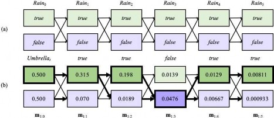
Figure 14.5 (a) Possible state sequences for Raint can be viewed as paths through a graph of
the possible states at each time step. (States are shown as rectangles to avoid confusion with
nodes in a Bayes net.) (b) Operation of the Viterbi algorithm for the umbrella observation
sequence [true, true, false, true, true], where the evidence starts at time 1. For each t, we
have shown the values of the message m1:t, which gives the probability of the best sequence
reaching each state at time t. Also, for each state, the bold arrow leading into it indicates
its best predecessor as measured by the product of the preceding sequence probability and
the transition probability. Following the bold arrows back from the most likely state in m1:5
gives the most likely sequence, shown by the bold outlines and darker shading.the forward message f1:t in the filtering algorithm. The message is defined as follows:5
m1:t = max P(x1:t−1, Xt, e1:t) .
x1:t−1
To obtain the recursive relationship between m1:t+1 and m1:t, we can repeat more or less the
same steps that we used for Equation (14.5):m1:t+1 = max P(x1:t, Xt+1, e1:t+1) = max P(x1:t, Xt+1, e1:t , et+1)
x1:t x1:t
= max P(et+1 | x1:t, Xt+1, e1:t)P(x1:t, Xt+1, e1:t)
x1:t
= P(et+1 | Xt+1) max P(Xt+1, | xt)P(x1:t, e1:t)
x1:t
= P(et+1 | Xt+1) max P(Xt+1, | xt) max P(x1:t−1, xt, e1:t) (14.11)
xt x1:t−1
where the final term maxx1:t−1 P(x1:t−1, xt, e1:t) is exactly the entry for the particular state xt
in the message vector m1:t. Equation (14.11) is essentially identical to the filtering equa-
tion (14.5) except that the summation over xt in Equation (14.5) is replaced by the maximiza-
tion over xt in Equation (14.11), and there is no normalization constant α in Equation (14.11).
Thus, the algorithm for computing the most likely sequence is similar to filtering: it starts at
time 0 with the prior m1:0 = P(X0) and then runs forward along the sequence, computing the5 Notice that these are not quite the probabilities of the most likely paths to reach the states Xt given the evidence,
which would be the conditional probabilities maxx1:t−1 P(x1:t−1, Xt | e1:t ); but the two vectors are related by a
constant factor P(e1:t ). The difference is immaterial because the max operator doesn’t care about constant factors.
We get a slightly simpler recursion with m1:t defined this way.Section 14.3 Hidden Markov Models 491
m message at each time step using Equation (14.11). The progress of this computation is
shown in Figure 14.5(b).At the end of the observation sequence, m1:t will contain the probability for the most
likely sequence reaching each of the final states. One can thus easily select the final state of
the most likely sequence overall (the state outlined in bold at step 5). In order to identify the
actual sequence, as opposed to just computing its probability, the algorithm will also need to
record, for each state, the best state that leads to it; these are indicated by the bold arrows in
Figure 14.5(b). The optimal sequence is identified by following these bold arrows backwards
from the best final state.The algorithm we have just described is called the Viterbi algorithm, after its inventor, Viterbi algorithm
Andrew Viterbi. Like the filtering algorithm, its time complexity is linear in t, the length of
the sequence. Unlike filtering, which uses constant space, its space requirement is also linear
in t. This is because the Viterbi algorithm needs to keep the pointers that identify the best
sequence leading to each state.One final practical point: numerical underflow is a significant issue for the Viterbi algo-
rithm. In Figure 14.5(b), the probabilities are getting smaller and smaller—and this is just a
toy example. Real applications in DNA analysis or message decoding may have thousands or
millions of steps. One possible solution is simply to normalize m at each step; this rescaling
does not affect correctness because max(cx, cy) = c · max(x, y). A second solution is to use
log probabilities everywhere and replace multiplication by addition. Again, correctness is
unaffected because the log function is monotonic, so max(log x, log y) = logmax(x, y).
Hidden Markov Models
The preceding section developed algorithms for temporal probabilistic reasoning using a gen-
eral framework that was independent of the specific form of the transition and sensor models
and independent of the nature of the state and evidence variables. In this and the next two
sections, we discuss more concrete models and applications that illustrate the power of the
basic algorithms and in some cases allow further improvements.model
We begin with the hidden Markov model, or HMM. An HMM is a temporal probabilis- Hidden Markov
tic model in which the state of the process is described by a single, discrete random variable.
The possible values of the variable are the possible states of the world. The umbrella example
described in the preceding section is therefore an HMM, since it has just one state variable:
Raint. What happens if you have a model with two or more state variables? You can still fit
it into the HMM framework by combining the variables into a single “megavariable” whose
values are all possible tuples of values of the individual state variables. We will see that the
restricted structure of HMMs allows for a simple and elegant matrix implementation of all
the basic algorithms.6Although HMMs require the state to be a single, discrete variable, there is no correspond-
ing restriction on the evidence variables. This is because the evidence variables are always
observed, which means that there is no need to keep track of any distribution over their val-
ues. (If a variable is not observed, it can simply be dropped from the model for that time
step.) There can be many evidence variables, both discrete and continuous.6 The reader unfamiliar with basic operations on vectors and matrices might wish to consult Appendix A before
proceeding with this section.492 Chapter 14 Probabilistic Reasoning over Time
Observation matrix
Simplified matrix algorithms
With a single, discrete state variable Xt, we can give concrete form to the representations of
the transition model, the sensor model, and the forward and backward messages. Let the state
variable Xt have values denoted by integers 1, . . . , S, where S is the number of possible states.
The transition model P(Xt |Xt−1) becomes an S×S matrix T, whereTi j = P(Xt = j |Xt−1 = i) .
That is, Ti j is the probability of a transition from state i to state j. For example, if we number
the states Rain = true and Rain = false as 1 and 2, respectively, then the transition matrix for
the umbrella world defined in Figure 14.2 is0.3 0.7
T = P(Xt |Xt−1) = 0.7 0.3 .
O1 =
We also put the sensor model in matrix form. In this case, because the value of the evidence
variable Et is known at time t (call it et), we need only specify, for each state, how likely it
is that the state causes et to appear: we need P(et |Xt = i) for each state i. For mathematical
convenience we place these values into an S × S diagonal observation matrix, Ot, one for
each time step. The ith diagonal entry of Ot is P(et |Xt = i) and the other entries are 0. For
example, on day 1 in the umbrella world of Figure 14.5, U1 = true, and on day 3, U3 = false,
so we have0.9 0
0 0.2
; O3 = 0.1 0 .
0 0.8
Now, if we use column vectors to represent the forward and backward messages, all the com-
putations become simple matrix–vector operations. The forward equation (14.5) becomesf1:t+1 = α Ot+1TTf1:t (14.12)
and the backward equation (14.9) becomes
bk+1:t = TOk+1bk+2:t . (14.13)
From these equations, we can see that the time complexity of the forward–backward algo-
rithm (Figure 14.4) applied to a sequence of length t is O(S2t), because each step requires
multiplying an S-element vector by an S×S matrix. The space requirement is O(St), because
the forward pass stores t vectors of size S.Besides providing an elegant description of the filtering and smoothing algorithms for
HMMs, the matrix formulation reveals opportunities for improved algorithms. The first is a
simple variation on the forward–backward algorithm that allows smoothing to be carried out
in constant space, independently of the length of the sequence. The idea is that smoothing
for any particular time slice k requires the simultaneous presence of both the forward and
backward messages, f1:k and bk+1:t, according to Equation (14.8). The forward–backward al-
gorithm achieves this by storing the fs computed on the forward pass so that they are available
during the backward pass. Another way to achieve this is with a single pass that propagates
both f and b in the same direction. For example, the “forward” message f can be propagated
backward if we manipulate Equation (14.12) to work in the other direction:t+1
f1:t = α′(TT)−1O−1 f1:t+1 .
The modified smoothing algorithm works by first running the standard forward pass to com-
pute ft:t (forgetting all the intermediate results) and then running the backward pass for bothSection 14.3 Hidden Markov Models 493
function FIXED-LAG-SMOOTHING(et, hmm, d) returns a distribution over Xt−d
inputs: et, the current evidence for time step thmm, a hidden Markov model with S× S transition matrix T
d, the length of the lag for smoothing
persistent: t, the current time, initially 1
f, the forward message P(Xt |e1:t), initially hmm.PRIOR
B, the d-step backward transformation matrix, initially the identity matrix
et−d:t, double-ended list of evidence from t −d to t, initially empty
local variables: Ot−d, Ot, diagonal matrices containing the sensor model information
add et to the end of et−d:t
Ot ← diagonal matrix containing P(et |Xt)
if t > d then
f ← Forward(f, et−d)
remove et−d−1 from the beginning of et−d:t
Ot−d ← diagonal matrix containing P(et−d |Xt−d)
t−d
B ← O−1 T−1BTOt
else B ← BTOt
t←t + 1
if t > d + 1 then return NORMALIZE(f × B1) else return null
Figure 14.6 An algorithm for smoothing with a fixed time lag of d steps, implemented as an
online algorithm that outputs the new smoothed estimate given the observation for a new time
step. Notice that the final output NORMALIZE(f × B1) is just α f × b, by Equation (14.14).b and f together, using them to compute the smoothed estimate at each step. Since only one
copy of each message is needed, the storage requirements are constant (i.e., independent of
t, the length of the sequence). There are two significant restrictions on this algorithm: it re-
quires that the transition matrix be invertible and that the sensor model have no zeroes—that
is, that every observation be possible in every state.A second area in which the matrix formulation reveals an improvement is in online
smoothing with a fixed lag. The fact that smoothing can be done in constant space sug-
gests that there should exist an efficient recursive algorithm for online smoothing—that is,
an algorithm whose time complexity is independent of the length of the lag. Let us suppose
that the lag is d; that is, we are smoothing at time slice t −d, where the current time is t. By
Equation (14.8), we need to computeα f1:t−d × bt−d+1:t
for slice t −d. Then, when a new observation arrives, we need to compute
α f1:t−d+1 × bt−d+2:t+1
for slice t −d + 1. How can this be done incrementally? First, we can compute f1:t−d+1 from
f1:t−d, using the standard filtering process, Equation (14.5).
Computing the backward message incrementally is trickier, because there is no simple
relationship between the old backward message bt−d+1:t and the new backward message
bt−d+2:t+1. Instead, we will examine the relationship between the old backward message
bt−d+1:t and the backward message at the front of the sequence, bt+1:t. To do this, we apply494 Chapter 14 Probabilistic Reasoning over Time
Equation (14.13) d times to get
t−d+1:t =
∏
i = t−d+1
i
t+1:t =
t−d+1:t
,
b t TO ! b B 1
(14.14)
i
t+2:t+1 =
t−d+2:t+1
where the matrix Bt−d+1:t is the product of the sequence of T and O matrices and 1 is a vector
of 1s. B can be thought of as a “transformation operator” that transforms a later backward
message into an earlier one. A similar equation holds for the new backward messages afterthe next observation arrives:t−d+2:t+1 =
∏
i = t−d+2
b t+1
TO ! b B 1
(14.15)
.
Examining the product expressions in Equations (14.14) and (14.15), we see that they have a
simple relationship: to get the second product, “divide” the first product by the first element
TOt−d+1, and multiply by the new last element TOt+1. In matrix language, then, there is a
simple relationship between the old and new B matrices:t−d+1
Bt−d+2:t+1 = O−1
T−1Bt−d+1:t TOt+1 . (14.16)
This equation provides an incremental update for the B matrix, which in turn (through Equa-
tion (14.15)) allows us to compute the new backward message bt−d+2:t+1. The complete
algorithm, which requires storing and updating f and B, is shown in Figure 14.6.Hidden Markov model example: Localization
On page 151, we introduced a simple form of the localization problem for the vacuum world.
In that version, the robot had a single nondeterministic Move action and its sensors reported
perfectly whether or not obstacles lay immediately to the north, south, east, and west; the
robot’s belief state was the set of possible locations it could be in.Here we make the problem slightly more realistic by allowing for noise in the sensors,
and formalizing the idea that the robot moves randomly—it is equally likely to move to
any adjacent empty square. The state variable Xt represents the location of the robot on the
discrete grid; the domain of this variable is the set of empty squares, which we will label by
the integers{1,..., S}. Let NEIGHBORS(i) be the set of empty squares that are adjacent to i
and let N(i) be the size of that set. Then the transition model for the Move action says that
the robot is equally likely to end up at any neighboring square:0 otherwise.
P(Xt+1 = j |Xt = i) = Ti j = 1/N(i) if j ∈ NEIGHBORS(i)
We don’t know where the robot starts, so we will assume a uniform distribution over all the
squares; that is, P(X0 = i) = 1/S. For the particular environment we consider (Figure 14.7),
S = 42 and the transition matrix T has 42 × 42 = 1764 entries.The sensor variable Et has 16 possible values, each a four-bit sequence giving the pres-
ence or absence of an obstacle in each of the compass directions NESW. For example, 1010
means that the north and south sensors report an obstacle and the east and west do not. Sup-
pose that each sensor’s error rate is ϵ and that errors occur independently for the four sensor
directions. In that case, the probability of getting all four bits right is (1 −ϵ)4 and the proba-
bility of getting them all wrong is ϵ4. Furthermore, if dit is the discrepancy—the number ofSection 14.3 Hidden Markov Models 495
Posterior distribution over robot location after E1 = 1011
Posterior distribution over robot location after E1 = 1011, E2 = 1010
Figure 14.7 Posterior distribution over robot location: (a) after one observation E1 = 1011
(i.e., obstacles to the north, south, and west); (b) after a random move to an adjacent location
and a second observation E2 = 1010 (i.e., obstacles to the north and south). The darkness of
each square corresponds to the probability that the robot is at that location. The sensor error
rate for each bit is ϵ = 0.2.bits that are different—between the true values for square i and the actual reading et, then the
probability that a robot in square i would receive a sensor reading et isP(Et = et |Xt = i) = (Ot)ii = (1 −ϵ)4−dit ϵdit .
For example, the probability that a square with obstacles to the north and south would produce
a sensor reading 1110 is (1 −ϵ)3ϵ1.Given the matrices T and Ot, the robot can use Equation (14.12) to compute the posterior
distribution over locations—that is, to work out where it is. Figure 14.7 shows the distri-
butions P(X1 |E1 = 1011) and P(X2 |E1 = 1011, E2 = 1010). This is the same maze we saw
before in Figure 4.18 (page 152), but there we used logical filtering to find the locations that
were possible, assuming perfect sensing. Those same locations are still the most likely with
noisy sensing, but now every location has some nonzero probability because any location
could produce any sensor values.In addition to filtering to estimate its current location, the robot can use smoothing (Equa-
tion (14.13)) to work out where it was at any given past time—for example, where it began
at time 0—and it can use the Viterbi algorithm to work out the most likely path it has taken
to get where it is now. Figure 14.8 shows the localization error and Viterbi path error for
various values of the per-bit sensor error rate ϵ. Even when ϵ is 0.20—which means that the
overall sensor reading is wrong 59% of the time—the robot is usually able to work out its lo-
cation to within two squares after 20 observations. This is because of the algorithm’s ability
to integrate evidence over time and to take into account the probabilistic constraints imposed496 Chapter 14 Probabilistic Reasoning over Time
= 0.40
= 0.20
= 0.10
= 0.05
= 0.02
= 0.00
7
Localization error
6
5
4
3
2
1
0
0 5 10 15 20 25 30 35 40
Number of observations
10
= 0.40
= 0.20
= 0.10
= 0.05
= 0.02
= 0.00
9
Viterbi path error
8
7
6
5
4
3
2
1
0
0 5 10 15 20 25 30 35 40
Number of observations
(a) (b)
Figure 14.8 Performance of HMM localization as a function of the length of the observation
sequence for various different values of the sensor error probability ϵ; data averaged over 400
runs. (a) The localization error, defined as the Manhattan distance from the true location. (b)
The Viterbi path error, defined as the average Manhattan distance of states on the Viterbi path
from corresponding states on the true path.on the location sequence by the transition model. When ϵ is 0.10 or less, the robot needs
only a few observations to work out where it is and to track its position accurately. When
ϵ is 0.40, both the localization error and the Viterbi path error remain large; in other words,
the robot is lost. This is because a sensor with an error probability of 0.40 provides too little
information to counteract the loss of information about the robot’s position that comes from
the unpredictable random motion.The state variable for the example we have considered in this section is a physical loca-
tion in the world. Other problems can, of course, include other aspects of the world. Exer-
cise 14.ROOM asks you to consider a version of the vacuum robot that has the policy of going
straight for as long as it can; only when it encounters an obstacle does it change to a new
heading. To model this robot, each state in the model consists of a (location, heading) pair.
For the environment in Figure 14.7, which has 42 empty squares, this leads to 168 states and
a transition matrix with 1682 = 28, 224 entries—still a manageable number.If we add the possibility of dirt in each of the 42 squares, the number of states is multiplied
by 242 and the transition matrix has more than 1029 entries—no longer a manageable number.
In general, if the state is composed of n discrete variables with at most d values each, the
corresponding HMM transition matrix will have size O(d2n) and the per-update computation
time will also be O(d2n).For these reasons, although HMMs have many uses in areas ranging from speech recogni-
tion to molecular biology, they are fundamentally limited in their ability to represent complex
processes. In the terminology introduced in Chapter 2, HMMs are an atomic representation:
states of the world have no internal structure and are simply labeled by integers. Section 14.5
shows how to use dynamic Bayesian networks—a factored representation—to model domains
with many state variables. The next section shows how to handle domains with continuous
state variables, which of course lead to an infinite state space.Section 14.4 Kalman Filters 497
Kalman Filters
Imagine watching a small bird flying through dense jungle foliage at dusk: you glimpse
brief, intermittent flashes of motion; you try hard to guess where the bird is and where it will
appear next so that you don’t lose it. Or imagine that you are a World War II radar operator
peering at a faint, wandering blip that appears once every 10 seconds on the screen. Or, going
back further still, imagine you are Kepler trying to reconstruct the motions of the planets
from a collection of highly inaccurate angular observations taken at irregular and imprecisely
measured intervals.In all these cases, you are doing filtering: estimating state variables (here, the position
and velocity of a moving object) from noisy observations over time. If the variables were
discrete, we could model the system with a hidden Markov model. This section examinesmethods for handling continuous variables, using an algorithm called Kalman filtering, after Kalman filtering
one of its inventors, Rudolf Kalman.
The bird’s flight might be specified by six continuous variables at each time point; three
for position (Xt,Yt, Zt) and three for velocity (X˙t ,Y˙t , Z˙t ). We will need suitable conditional
densities to represent the transition and sensor models; as in Chapter 13, we will use linear–distributions. This means that the next state Xt+1 must be a linear function of the
current state Xt, plus some Gaussian noise, a condition that turns out to be quite reasonable in
practice. Consider, for example, the X -coordinate of the bird, ignoring the other coordinatesfor now. Let the time interval between observations be ∆, and assume constant velocity during
the interval; then the position update is given by Xt+∆ = Xt + X˙ ∆. Adding Gaussian noise (to
account for wind variation, etc.), we obtain a linear–Gaussian transition model:P(Xt+∆ = xt+∆ |Xt = xt, X˙t = x˙t) = N (xt+∆; xt + x˙t ∆, σ2) .
The Bayesian network structure for a system with position vector Xt and velocity X˙ t is shown
in Figure 14.9. Note that this is a very specific form of linear–Gaussian model; the general
form will be described later in this section and covers a vast array of applications beyond the
simple motion examples of the first paragraph. The reader might wish to consult Appendix A
for some of the mathematical properties of Gaussian distributions; for our immediate pur-
poses, the most important is that a multivariate Gaussian distribution for d variables isspecified by a d-element mean µ and a d ×d covariance matrix Σ.
Updating Gaussian distributions
In Chapter 13 on page 441, we alluded to a key property of the linear–Gaussian family of
distributions: it remains closed under Bayesian updating. (That is, given any evidence, the
posterior is still in the linear–Gaussian family.) Here we make this claim precise in the context
of filtering in a temporal probability model. The required properties correspond to the two-
step filtering calculation in Equation (14.5):If the current distribution P(Xt | e1:t) is Gaussian and the transition model P(Xt+1 | xt)
is linear–Gaussian, then the one-step predicted distribution given by
t
P(Xt+1 | e1:t) = ∫x P(Xt+1 | xt)P(xt | e1:t) dxt (14.17)
is also a Gaussian distribution.
498 Chapter 14 Probabilistic Reasoning over Time
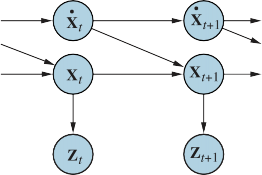
Figure 14.9 Bayesian network structure for a linear dynamical system with position Xt,
velocity X˙ t , and position measurement Zt.If the prediction P(Xt+1 | e1:t) is Gaussian and the sensor model P(et+1 | Xt+1) is linear–
Gaussian, then, after conditioning on the new evidence, the updated distributionP(Xt+1 | e1:t+1) = α P(et+1 | Xt+1)P(Xt+1 | e1:t) (14.18)
is also a Gaussian distribution.
Thus, the FORWARD operator for Kalman filtering takes a Gaussian forward message f1:t,
specified by a mean µt and covariance Σt, and produces a new multivariate Gaussian forward
message f1:t+1, specified by a mean µt+1 and covariance Σt+1. So if we start with a Gaussianprior f1:0 = P(X0) = N (µ0, Σ0), filtering with a linear–Gaussian model produces a Gaussian
state distribution for all time.
This seems to be a nice, elegant result, but why is it so important? The reason is that
except for a few special cases such as this, filtering with continuous or hybrid (discrete and
over time. This statement is not easy to prove in general, but Exercise 14.KFSW shows what
happens for a simple example.
A simple one-dimensional example
We have said that the FORWARD operator for the Kalman filter maps a Gaussian into a new
Gaussian. This translates into computing a new mean and covariance from the previous mean
and covariance. Deriving the update rule in the general (multivariate) case requires rather a
lot of linear algebra, so we will stick to a very simple univariate case for now, and later give
the results for the general case. Even for the univariate case, the calculations are somewhat
tedious, but we feel that they are worth seeing because the usefulness of the Kalman filter is
tied so intimately to the mathematical properties of Gaussian distributions.0
The temporal model we consider describes a random walk of a single continuous state
variable Xt with a noisy observation Zt. An example might be the “consumer confidence” in-
dex, which can be modeled as undergoing a random Gaussian-distributed change each month
and is measured by a random consumer survey that also introduces Gaussian sampling noise.
The prior distribution is assumed to be Gaussian with variance σ2:2
— 1 (x0−µ0)2
σ
P(x0) = αe 2 0 .
Section 14.4 Kalman Filters 499
x
(For simplicity, we use the same symbol α for all normalizing constants in this section.) The
transition model adds a Gaussian perturbation of constant variance σ2 to the current state:— 1 (xt+1−xt )2
P(xt+1
|xt) = αe 2
σx2 .
z
The sensor model assumes Gaussian noise with variance σ2:
— 1 (zt −xt )2
P(zt |xt) = αe 2
σz2 .
Now, given the prior P(X0), the one-step predicted distribution comes from Equation (14.17):
σ
P(x1) =
−∞
P(x1 |x0)P(x0) dx0 = α
−∞
e
2
σx2
e
2
2
0
dx0
∫ ∞ ∫ ∞ − 1 (x1−x0)2 − 1 (x0−µ0)2
= α
∞
−∞
e
1
2
0
1
0
x
σ2σx2
0
0
dx0 .
∫ − σ2(x −x )2+σ2(x −µ )2
0
This integral looks rather complicated. The key to progress is to notice that the exponent is the
sum of two expressions that are quadratic in x0 and hence is itself a quadratic in x0. A simpletrick known as completing the square allows the rewriting of any quadratic ax2 + bx0 + c as Completing the
the sum of a squared term a(x0 − −b )2 and a residual term c − b2
0
that is independent of x0.
square
In this case, we have a
2 2 2a
2 2 , b = −2(σ2x
2 4a
2 2 , and c =(σ2x2 +
=(σ0 + σx )/(σ0 σx ) 0 1 + σx µ0)/(σ0 σx ) 0 1
σ2µ2)/(σ2σ2). The residual term can be taken outside the integral, giving us
x 0 0 x
( 1) = α
P x
e− 1 c− b2 ∫ ∞ e− 1 (a(x − −b )2) dx
2
4a
−∞
2
0
2a
0 .
Now the integral is just the integral of a Gaussian over its full range, which is simply 1. Thus,
we are left with only the residual term from the quadratic. Plugging back in the expressions
for a, b, and c and simplifying, we obtain0
— 1 (x1−µ0)2
P(x1) = αe 2
σ2+σx2 .
That is, the one-step predicted distribution is a Gaussian with the same mean µ0 and a variance
equal to the sum of the original variance σ2 and the transition variance σ2.0 x
To complete the update step, we need to condition on the observation at the first time
step, namely, z1. From Equation (14.18), this is given byP(x1 | z1) = α P(z1 |x1)P(x1)
= αe
2
σz2
e
2
σ2+σx2
.
— 1 (z1−x1)2 − 1 (x1−µ0)2
0
Once again, we combine the exponents and complete the square (Exercise 14.KALM), obtain-
ing the following expression for the posterior:x1−
0 x
2
1
z
0
1
2
σ0 +σx2+σz2
(σ2+σx2)σz2/(σ2+σx2+σz2)
(σ2+σ2)z +σ2µ 2
—
P(x1 | z1) = αe 0 0 . (14.19)
Thus, after one update cycle, we have a new Gaussian distribution for the state variable.
From the Gaussian formula in Equation (14.19), we see that the new mean and standard
deviation can be calculated from the old mean and standard deviation as follows:(σ2 + σ2)zt+1 + σ2µt (σ2 + σ2)σ2
t+1
µt+1 =
t x z
σ2 + σ2 + σ2
and σ2
= t x z . (14.20)
σ2 + σ2 + σ2
t x z t x z
500 Chapter 14 Probabilistic Reasoning over Time
0.45
0.4
0.35
0.3
P(x)
0.25
0.2
0.15
0.1
0.05
0
P(x1)
P(x0)
P(x1 | z1 = 2.5)
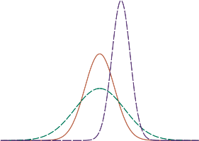
z*
-10 -5 0 1
x position
5 10
Figure 14.10 Stages in the Kalman filter update cycle for a random walk with a prior given
by µ0 = 0.0 and σ0 = 1.5, transition noise given by σx = 2.0, sensor noise given by σz = 1.0,
and a first observation z1 = 2.5 (marked on the x-axis). Notice how the prediction P(x1) is
flattened out, relative to P(x0), by the transition noise. Notice also that the mean of the
posterior distribution P(x1 | z1) is slightly to the left of the observation z1 because the mean is
a weighted average of the prediction and the observation.Figure 14.10 shows one update cycle of the Kalman filter in the one-dimensional case for
particular values of the transition and sensor models.Equation (14.20) plays exactly the same role as the general filtering equation (14.5) or
the HMM filtering equation (14.12). Because of the special nature of Gaussian distributions,
however, the equations have some interesting additional properties.z
t
x
First, we can interpret the calculation for the new mean µt+1 as a weighted mean of the
new observation zt+1 and the old mean µt. If the observation is unreliable, then σ2 is large
and we pay more attention to the old mean; if the old mean is unreliable (σ2 is large) or the
process is highly unpredictable (σ2 is large), then we pay more attention to the observation.t+1
Second, notice that the update for the variance σ2 is independent of the observation. We
x
z
can therefore compute in advance what the sequence of variance values will be. Third, the
sequence of variance values converges quickly to a fixed value that depends only on σ2 and
σ2, thereby substantially simplifying the subsequent calculations. (See Exercise 14.VARI.)The general case
The preceding derivation illustrates the key property of Gaussian distributions that allows
Kalman filtering to work: the fact that the exponent is a quadratic form. This is true not just
for the univariate case; the full multivariate Gaussian distribution has the formN (x; µ, Σ) = αe
2
.
— 1 (x−µ)TΣ−1(x−µ)
Multiplying out the terms in the exponent, we see that the exponent is also a quadratic func-
tion of the values xi in x. Thus, filtering preserves the Gaussian nature of the state distribution.Section 14.4 Kalman Filters 501
Let us first define the general temporal model used with Kalman filtering. Both the tran-
sition model and the sensor model are required to be a linear transformation with additive
Gaussian noise. Thus, we haveP(xt+1 | xt) = N (xt+1; Fxt, Σx)
P(zt | xt) = N (zt; Hxt, Σz) ,
(14.21)
where F and Σx are matrices describing the linear transition model and transition noise co-
variance, and H and Σz are the corresponding matrices for the sensor model. Now the update
equations for the mean and covariance, in their full, hairy horribleness, areµt+1 = Fµt + Kt+1(zt+1 — HFµt )
Σt+1 = (I — Kt+1H)(FΣtFT + Σx) ,
(14.22)
where Kt+1 =(FΣtFT +Σx)HT(H(FΣtFT +Σx)HT +Σz)—1 is the Kalman gain matrix. Be- Kalman gain matrix
lieve it or not, these equations make some intuitive sense. For example, consider the up-
date for the mean state estimate µ. The term Fµt is the predicted state at t + 1, so HFµt is
the predicted observation. Therefore, the term zt+1 — HFµt represents the error in the pre-
dicted observation. This is multiplied by Kt+1 to correct the predicted state; hence, Kt+1
is a measure of how seriously to take the new observation relative to the prediction. As inEquation (14.20), we also have the property that the variance update is independent of the
observations. The sequence of values for Σt and Kt can therefore be computed offline, and
the actual calculations required during online tracking are quite modest.To illustrate these equations at work, we have applied them to the problem of tracking an
object moving on the X –Y plane. The state variables are X = (X,Y, X˙ ,Y˙ )T, so F, Σx, H, and
Σz are 4 × 4 matrices. Figure 14.11(a) shows the true trajectory, a series of noisy observations,and the trajectory estimated by Kalman filtering, along with the covariances indicated by the
one-standard-deviation contours. The filtering process does a good job of tracking the actual
motion, and, as expected, the variance quickly reaches a fixed point.We can also derive equations for smoothing as well as filtering with linear–Gaussian
models. The smoothing results are shown in Figure 14.11(b). Notice how the variance in the
position estimate is sharply reduced, except at the ends of the trajectory (why?), and that the
estimated trajectory is much smoother.Applicability of Kalman filtering
The Kalman filter and its elaborations are used in a vast array of applications. The “classical”
application is in radar tracking of aircraft and missiles. Related applications include acoustic
tracking of submarines and ground vehicles and visual tracking of vehicles and people. In a
slightly more esoteric vein, Kalman filters are used to reconstruct particle trajectories from
bubble-chamber photographs and ocean currents from satellite surface measurements. The
range of application is much larger than just the tracking of motion: any system characterized
by continuous state variables and noisy measurements will do. Such systems include pulp
mills, chemical plants, nuclear reactors, plant ecosystems, and national economies.The fact that Kalman filtering can be applied to a system does not mean that the re-
sults will be valid or useful. The assumptions made—linear–Gaussian transition and sensorfilter (EKF)
models—are very strong. The extended Kalman filter (EKF) attempts to overcome nonlin- Extended Kalman
earities in the system being modeled. A system is nonlinear if the transition model cannot Nonlinear
be described as a matrix multiplication of the state vector, as in Equation (14.21). The EKF
502 Chapter 14 Probabilistic Reasoning over Time
2D filtering 2D smoothing
true
observed
filteredtrue
observed
smoothed12 12
11 11
10 10
Y 9 Y 9
8 8
7 7
6
8 10 12 14 16 18 20 22 24 26
X
(a)
6
8 10 12 14 16 18 20 22 24 26
X
(b)
Figure 14.11 (a) Results of Kalman filtering for an object moving on the X –Y plane, showing
the true trajectory (left to right), a series of noisy observations, and the trajectory estimated
by Kalman filtering. Variance in the position estimate is indicated by the ovals. (b) The
results of Kalman smoothing for the same observation sequence.Switching Kalman
filterworks by modeling the system as locally linear in xt in the region of xt = µt , the mean of the
current state distribution. This works well for smooth, well-behaved systems and allows the
tracker to maintain and update a Gaussian state distribution that is a reasonable approximation
to the true posterior. A detailed example is given in Chapter 26.What does it mean for a system to be “unsmooth” or “poorly behaved”? Technically,
it means that there is significant nonlinearity in system response within the region that is
“close” (according to the covariance Σt) to the current mean µt . To understand this ideain nontechnical terms, consider the example of trying to track a bird as it flies through the
jungle. The bird appears to be heading at high speed straight for a tree trunk. The Kalman
filter, whether regular or extended, can make only a Gaussian prediction of the location of the
bird, and the mean of this Gaussian will be centered on the trunk, as shown in Figure 14.12(a).
A reasonable model of the bird, on the other hand, would predict evasive action to one side or
the other, as shown in Figure 14.12(b). Such a model is highly nonlinear, because the bird’s
decision varies sharply depending on its precise location relative to the trunk.To handle examples like these, we clearly need a more expressive language for repre-
senting the behavior of the system being modeled. Within the control theory community, for
which problems such as evasive maneuvering by aircraft raise the same kinds of difficulties,
the standard solution is the switching Kalman filter. In this approach, multiple Kalman fil-
ters run in parallel, each using a different model of the system—for example, one for straight
flight, one for sharp left turns, and one for sharp right turns. A weighted sum of predictions
is used, where the weight depends on how well each filter fits the current data. We will see
in the next section that this is simply a special case of the general dynamic Bayesian net-
work model, obtained by adding a discrete “maneuver” state variable to the network shown
in Figure 14.9. Switching Kalman filters are discussed further in Exercise 14.KFSW.Section 14.5 Dynamic Bayesian Networks 503
Figure 14.12 A bird flying toward a tree (top views). (a) A Kalman filter will predict the
location of the bird using a single Gaussian centered on the obstacle. (b) A more realistic
model allows for the bird’s evasive action, predicting that it will fly to one side or the other.
Dynamic Bayesian Networks
network
Dynamic Bayesian networks, or DBNs, extend the semantics of standard Bayesian networks Dynamic Bayesian
to handle temporal probability models of the kind described in Section 14.1. We have already
seen examples of DBNs: the umbrella network in Figure 14.2 and the Kalman filter network
in Figure 14.9. In general, each slice of a DBN can have any number of state variables Xt
and evidence variables Et. For simplicity, we assume that the variables, their links, and their
conditional distributions are exactly replicated from slice to slice and that the DBN represents
a first-order Markov process, so that each variable can have parents only in its own slice or
the immediately preceding slice. In this way, the DBN corresponds to a Bayesian network
with infinitely many variables.It should be clear that every hidden Markov model can be represented as a DBN with
a single state variable and a single evidence variable. It is also the case that every discrete-
variable DBN can be represented as an HMM; as explained in Section 14.3, we can combine
all the state variables in the DBN into a single state variable whose values are all possible
tuples of values of the individual state variables. Now, if every HMM is a DBN and everyDBN can be translated into an HMM, what’s the difference? The difference is that, by de- K
composing the state of a complex system into its constituent variables, we can take advantage
of sparseness in the temporal probability model.
To see what this means in practice, remember that in Section 14.3 we said that an HMM
representation for a temporal process with n discrete variables, each with up to d values,
needs a transition matrix of size O(d2n). The DBN representation, on the other hand, has size
O(ndk) if the number of parents of each variable is bounded by k. In other words, the DBN
representation is linear rather than exponential in the number of variables. For the vacuum
robot with 42 possibly dirty locations, the number of probabilities required is reduced from
5 × 1029 to a few thousand.We have already explained that every Kalman filter model can be represented in a DBN
with continuous variables and linear–Gaussian conditional distributions (Figure 14.9). It
should be clear from the discussion at the end of the preceding section that not every DBN
can be represented by a Kalman filter model. In a Kalman filter, the current state distribution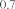
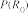
504 Chapter 14 Probabilistic Reasoning over Time
R0
P(R1|R0)
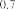
R1 P(U1|R1)
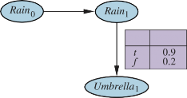
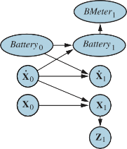
Figure 14.13 Left: Specification of the prior, transition model, and sensor model for the
umbrella DBN. Subsequent slices are copies of slice 1. Right: A simple DBN for robot
motion in the X–Y plane.is always a single multivariate Gaussian distribution—that is, a single “bump” in a particular
location. DBNs, on the other hand, can model arbitrary distributions.For many real-world applications, this flexibility is essential. Consider, for example, the
current location of my keys. They might be in my pocket, on the bedside table, on the kitchen
counter, dangling from the front door, or locked in the car. A single Gaussian bump that
included all these places would have to allocate significant probability to the keys being in
mid-air above the front garden. Aspects of the real world such as purposive agents, obstacles,
and pockets introduce “nonlinearities” that require combinations of discrete and continuous
variables in order to get reasonable models.Constructing DBNs
To construct a DBN, one must specify three kinds of information: the prior distribution over
the state variables, P(X0); the transition model P(Xt+1 | Xt); and the sensor model P(Et | Xt).
To specify the transition and sensor models, one must also specify the topology of the con-
nections between successive slices and between the state and evidence variables. Because
the transition and sensor models are assumed to be time-homogeneous—the same for all t—
it is most convenient simply to specify them for the first slice. For example, the complete
DBN specification for the umbrella world is given by the three-node network shown in Fig-
ure 14.13(a). From this specification, the complete DBN with an unbounded number of time
slices can be constructed as needed by copying the first slice.Let us now consider a more interesting example: monitoring a battery-powered robot
moving in the X–Y plane, as introduced at the end of Section 14.1. First, we need state
variables, which will include both Xt =(Xt,Yt) for position and X˙ t =(X˙t ,Y˙t ) for velocity. Weassume some method of measuring position—perhaps a fixed camera or onboard GPS (Global
Positioning System)—yielding measurements Zt. The position at the next time step depends
on the current position and velocity, as in the standard Kalman filter model. The velocity at
the next step depends on the current velocity and the state of the battery. We add Batteryt toSection 14.5 Dynamic Bayesian Networks 505
represent the actual battery charge level, which has as parents the previous battery level and
the velocity, and we add BMetert, which measures the battery charge level. This gives us the
basic model shown in Figure 14.13(b).It is worth looking in more depth at the nature of the sensor model for BMetert. Let us
suppose, for simplicity, that both Batteryt and BMetert can take on discrete values 0 through5. (Exercise 14.BATT asks you to relate this discrete model to a corresponding continuous
model.) If the meter is always accurate, then the CPT P(BMetert |Batteryt) should have
probabilities of 1.0 “along the diagonal” and probabilities of 0.0 elsewhere. In reality, noise
always creeps into measurements. For continuous measurements, a Gaussian distribution
with a small variance might be used.7 For our discrete variables, we can approximate a
Gaussian using a distribution in which the probability of error drops off in the appropriate
way, so that the probability of a large error is very small. We use the term Gaussian errormodel to cover both the continuous and discrete versions. Gaussian error model
Anyone with hands-on experience of robotics, computerized process control, or other
forms of automatic sensing will readily testify to the fact that small amounts of measurement
noise are often the least of one’s problems. Real sensors fail. When a sensor fails, it does
not necessarily send a signal saying, “Oh, by the way, the data I’m about to send you is a
load of nonsense.” Instead, it simply sends the nonsense. The simplest kind of failure iscalled a transient failure, where the sensor occasionally decides to send some nonsense. For Transient failure
example, the battery level sensor might have a habit of sending a reading of 0 when someone
bumps the robot, even if the battery is fully charged.Let’s see what happens when a transient failure occurs with a Gaussian error model that
doesn’t accommodate such failures. Suppose, for example, that the robot is sitting quietly
and observes 20 consecutive battery readings of 5. Then the battery meter has a temporary
seizure and the next reading is BMeter21 = 0. What will the simple Gaussian error model lead
us to believe about Battery21? According to Bayes’ rule, the answer depends on both the
sensor model P(BMeter21 = 0 |Battery21) and the prediction P(Battery21 |BMeter1:20). If the
probability of a large sensor error is significantly less than the probability of a transition to
Battery21 = 0, even if the latter is very unlikely, then the posterior distribution will assign a
high probability to the battery’s being empty.A second reading of 0 at t = 22 will make this conclusion almost certain. If the transient
failure then disappears and the reading returns to 5 from t = 23 onwards, the estimate for the
battery level will quickly return to 5. (This does not mean the algorithm thinks the battery
magically recharged itself, which may be physically impossible; instead, the algorithm now
believes that the battery was never low and the extremely unlikely hypothesis that the battery
meter had two consecutive huge errors must be the right explanation.) This course of events
is illustrated in the upper curve of Figure 14.14(a), which shows the expected value (see
Appendix A) of Batteryt over time, using a discrete Gaussian error model.Despite the recovery, there is a time (t = 22) when the robot is convinced that its battery
is empty; presumably, then, it should send out a mayday signal and shut down. Alas, itsoversimplified sensor model has led it astray. The moral of the story is simple: for the system K
to handle sensor failure properly, the sensor model must include the possibility of failure.
7 Strictly speaking, a Gaussian distribution is problematic because it assigns nonzero probability to large nega-
tive charge levels. The beta distribution is sometimes a better choice for a variable whose range is restricted.506 Chapter 14 Probabilistic Reasoning over Time
E(Batteryt |...5555005555...)
5 5
E(Batteryt)
E(Batteryt)
4 4
3 3
2 2
1 1
0 0
E(Batteryt |...5555000000...)
-1 -1
15 20 25 30
Time step t
E(Batteryt |...5555005555...)
E(Batteryt |...5555000000...)
15 20 25 30
Time step
(a) (b)
Figure 14.14 (a) Upper curve: trajectory of the expected value of Batteryt for an observation
sequence consisting of all 5s except for 0s at t = 21 and t = 22, using a simple Gaussian error
model. Lower curve: trajectory when the observation remains at 0 from t = 21 onwards. (b)
The same experiment run with the transient failure model. The transient failure is handled
well, but the persistent failure results in excessive pessimism about the battery charge.Transient failure
modelPersistent failure
modelThe simplest kind of failure model for a sensor allows a certain probability that the sensor
will return some completely incorrect value, regardless of the true state of the world. For
example, if the battery meter fails by returning 0, we might say thatP(BMetert = 0 |Batteryt = 5) = 0.03 ,
which is presumably much larger than the probability assigned by the simple Gaussian error
model. Let’s call this the transient failure model. How does it help when we are faced
with a reading of 0? Provided that the predicted probability of an empty battery, according
to the readings so far, is much less than 0.03, then the best explanation of the observation
BMeter21 = 0 is that the sensor has temporarily failed. Intuitively, we can think of the belief
about the battery level as having a certain amount of “inertia” that helps to overcome tempo-
rary blips in the meter reading. The upper curve in Figure 14.14(b) shows that the transient
failure model can handle transient failures without a catastrophic change in beliefs.So much for temporary blips. What about a persistent sensor failure? Sadly, failures of
this kind are all too common. If the sensor returns 20 readings of 5 followed by 20 readings
of 0, then the transient sensor failure model described in the preceding paragraph will result
in the robot gradually coming to believe that its battery is empty when in fact it may be that
the meter has failed. The lower curve in Figure 14.14(b) shows the belief “trajectory” for
this case. By t = 25—five readings of 0—the robot is convinced that its battery is empty.
Obviously, we would prefer the robot to believe that its battery meter is broken—if indeed
this is the more likely event.Unsurprisingly, to handle persistent failure, we need a persistent failure model that
describes how the sensor behaves under normal conditions and after failure. To do this,
we need to augment the state of the system with an additional variable, say, BMBroken, that
describes the status of the battery meter. The persistence of failure must be modeled by anSection 14.5 Dynamic Bayesian Networks 507
(a)
E(Batteryt |...5555005555...)
B0
P(B1)
t
1.000
f
0.001
5
4
BMBroken 0
BMBroken1
BMeter1
Battery0
Battery1
E(Batteryt)
E(Batteryt |...5555000000...)
3
2
P(BMBrokent |...5555000000...)
1
0
P(BMBrokent |...5555005555...)
-1
15 20 25 30
Time step
(b)
Figure 14.15 (a) A DBN fragment showing the sensor status variable required for modeling
persistent failure of the battery sensor. (b) Upper curves: trajectories of the expected value of
Batteryt for the “transient failure” and “permanent failure” observations sequences. Lower
curves: probability trajectories for BMBroken given the two observation sequences.arc linking BMBroken0 to BMBroken1. This persistence arc has a CPT that gives a small Persistence arc
probability of failure in any given time step, say, 0.001, but specifies that the sensor stays
broken once it breaks. When the sensor is OK, the sensor model for BMeter is identical to
the transient failure model; when the sensor is broken, it says BMeter is always 0, regardless
of the actual battery charge.The persistent failure model for the battery sensor is shown in Figure 14.15(a). Its per-
formance on the two data sequences (temporary blip and persistent failure) is shown in Fig-
ure 14.15(b). There are several things to notice about these curves. First, in the case of the
temporary blip, the probability that the sensor is broken rises significantly after the second
0 reading, but immediately drops back to zero once a 5 is observed. Second, in the case of
persistent failure, the probability that the sensor is broken rises quickly to almost 1 and stays
there. Finally, once the sensor is known to be broken, the robot can only assume that its
battery discharges at the “normal” rate. This is shown by the gradually descending level of
E(Batteryt | . . . ).So far, we have merely scratched the surface of the problem of representing complex
processes. The variety of transition models is huge, encompassing topics as disparate as
modeling the human endocrine system and modeling multiple vehicles driving on a freeway.
Sensor modeling is also a vast subfield in itself. But dynamic Bayesian networks can model
even subtle phenomena, such as sensor drift, sudden decalibration, and the effects of exoge-
nous conditions (such as weather) on sensor readings.Exact inference in DBNs
Having sketched some ideas for representing complex processes as DBNs, we now turn to the
question of inference. In a sense, this question has already been answered: dynamic Bayesian
networks are Bayesian networks, and we already have algorithms for inference in Bayesian
networks. Given a sequence of observations, one can construct the full Bayesian network rep-P(R1|R0)
P(R1|R0)
P(R1|R0)
508 Chapter 14 Probabilistic Reasoning over Time
R0
P(R1|R0)
R0
P(R1|R0)
R1
P(R2|R1)
R2
P(R3|R2)
R3
P(R4|R3)

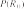
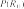
Rain0
Rain1
Rain2
Rain3
Rain4
Umbrella1 Umbrella2 Umbrella3 Umbrella4
R1
P(U1|R1)
R1
P(U1|R1)
R2
P(U2|R2)
R3
P(U3|R3)
R4
P(U4|R4)
Rain0
Rain1
Umbrella1
Figure 14.16 Unrolling a dynamic Bayesian network: slices are replicated to accommodate
the observation sequence Umbrella1:3. Further slices have no effect on inferences within the
observation period.resentation of a DBN by replicating slices until the network is large enough to accommodate
the observations, as in Figure 14.16. This technique is called unrolling. (Technically, the
DBN is equivalent to the semi-infinite network obtained by unrolling forever. Slices added
beyond the last observation have no effect on inferences within the observation period and
can be omitted.) Once the DBN is unrolled, one can use any of the inference algorithms—
variable elimination, clustering methods, and so on—described in Chapter 13.Unfortunately, a naive application of unrolling would not be particularly efficient. If
we want to perform filtering or smoothing with a long sequence of observations e1:t, the
unrolled network would require O(t) space and would thus grow without bound as more
observations were added. Moreover, if we simply run the inference algorithm anew each
time an observation is added, the inference time per update will also increase as O(t).Looking back to Section 14.2.1, we see that constant time and space per filtering update
can be achieved if the computation can be done recursively. Essentially, the filtering update
in Equation (14.5) works by summing out the state variables of the previous time step to get
the distribution for the new time step. Summing out variables is exactly what the variable(Figure 13.13) algorithm does, and it turns out that running variable elimination
with the variables in temporal order exactly mimics the operation of the recursive filtering
update in Equation (14.5). The modified algorithm keeps at most two slices in memory at
any one time: starting with slice 0, we add slice 1, then sum out slice 0, then add slice 2, then
sum out slice 1, and so on. In this way, we can achieve constant space and time per filtering
update. (The same performance can be achieved by suitable modifications to the clustering
algorithm.) Exercise 14.DBNE asks you to verify this fact for the umbrella network.So much for the good news; now for the bad news: It turns out that the “constant” for the
per-update time and space complexity is, in almost all cases, exponential in the number of
state variables. What happens is that, as the variable elimination proceeds, the factors grow
to include all the state variables (or, more precisely, all those state variables that have parents
in the previous time slice). The maximum factor size is O(dn+k) and the total update cost per
step is O(ndn+k), where d is the domain size of the variables and k is the maximum number
of parents of any state variable.Of course, this is much less than the cost of HMM updating, which is O(d2n), but it is still
infeasible for large numbers of variables. This grim fact means is that even though we can userepresent very complex temporal processes with many sparsely connected variables,
Section 14.5 Dynamic Bayesian Networks 509
we cannot reason efficiently and exactly about those processes. The DBN model itself, which
represents the prior joint distribution over all the variables, is factorable into its constituent
CPTs, but the posterior joint distribution conditioned on an observation sequence—that is,
the forward message—is generally not factorable. The problem is intractable in general, so
we must fall back on approximate methods.Approximate inference in DBNs